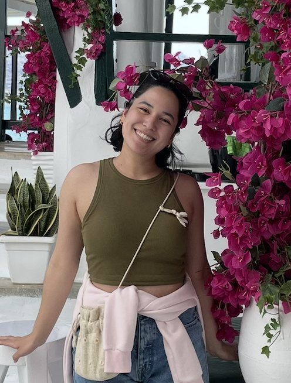
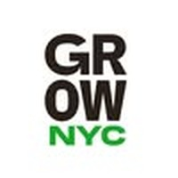
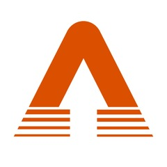
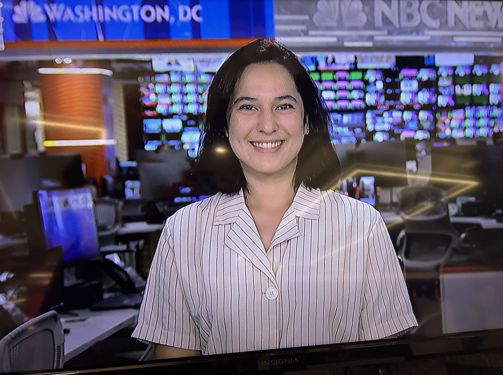

Where I started
NBC News · Meet the Press
I started my video production career working in live TV news on the historic show Meet the Press.
Welcome! I'm an experienced Social Media Producer based in NYC with experience in long-form (TV and YouTube) and short-form (Reels, Shorts and TikTok) video production, social media copywriting and audience analytics.

Selected work
Creators and organizations I've partnered with. Tap any project for the full story: the goal, what I did and the results.

Nonprofit · NYC
Civic engagement

Political news
Your project next? I work with creators and mission-driven organizations on strategy, production and growth.
Let's talkWhat I do
Beyond the case studies
Where I started
I started my video production career working in live TV news on the historic show Meet the Press.
Community
Small, local organizations that I've worked with professionally.
View organizationsPodcasts · Design · Writing
Podcasts, graphic designs, and writing I've done or contributed to through the years.
View all workI've always admired people who live diverse, storied lives — who have ripped apart the rulebook and followed a path of their own making. My career journey has routed me through various fields, including science, local and national politics, international relations and geopolitics, community building, journalism, live TV news, tech and AI, and now freelance video production. Throughout it all my mission never changed: to inform the public on what matters.
Most traditional corporations would find fault in my nonlinear background. If you're someone who sees the value in learning every day, adjusting to new challenges, thinking on your feet, never settling for mediocrity, and above all, making cool and impactful content, then I'd be thrilled to work together.

Contact
Interested in working together? Fill out this form or send me an email and I'll be in touch shortly.